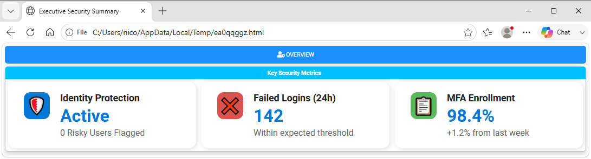
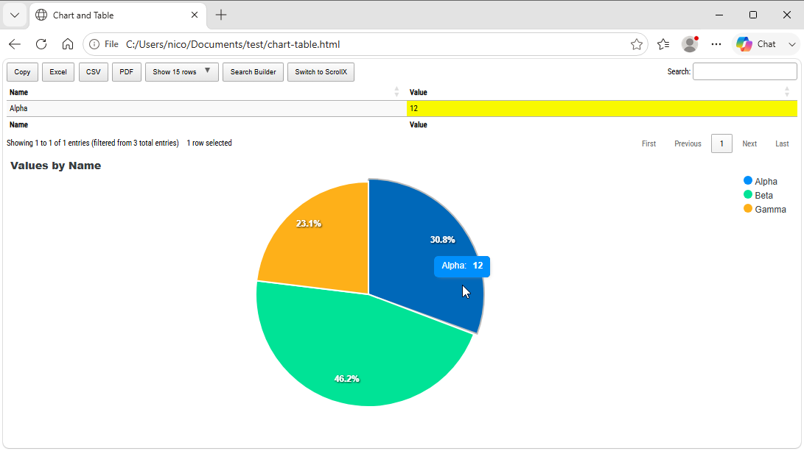

Chapter 11: Advanced Features, Layout Customization, and Troubleshooting
Advanced features Overview
As you scale PSWriteHTML across enterprise environments, building reports evolves beyond basic tables into crafting high-density, visually appealing dashboards.
This chapter covers modern UI components like InfoCards, dynamic layout density controls, advanced JavaScript/CSS customization, performance tuning, and diagnostic troubleshooting.
Modern Dashboard Components & Styling
Key Metrics with New-HTMLInfoCard
To display high-level KPIs, operational counters, or status summaries at the top of a dashboard, use New-HTMLInfoCard . InfoCards support icons (emojis, FontAwesome), custom colors, subtitle text, and distinct visual styles:
-Styles:
Standard,Compact,Fixed,Classic,NoIcon.-ShadowIntensity:
None,Subtle,Normal,Bold,ExtraBold,Custom(with-CustomShadowColor).-Icon: Icon to display on the card. Can be an emoji (like 👥, 🔒, 💪).
-IconSolid, -IconRegular, -IconBrands: Use FontAwesome icons with different styles
New-HTML -Title "Executive Security Summary" -Show {
New-HTMLTab -Name "Overview" -IconSolid "user-shield" {
# Section wrapping InfoCards with Comfortable spacing
New-HTMLSection -HeaderText "Key Security Metrics" -Density Comfortable {
New-HTMLInfoCard -Title "Identity Protection" `
-Number "Active" `
-Subtitle "0 Risky Users Flagged" `
-Icon "Shield" `
-IconColor '#0078d4'
New-HTMLInfoCard -Title "Failed Logins (24h)" `
-Number "142" `
-Subtitle "Within expected threshold" `
-Icon "Error" `
-IconColor '#d9534f'
New-HTMLInfoCard -Title "MFA Enrollment" `
-Number "98.4%" `
-Subtitle "+1.2% from last week" `
-Icon "Report" `
-IconColor '#5cb85c'
}
}
}
This is the result:

Fig. 25 Dashboard information cards displaying high-level operational metrics.
Controlling Layout Density with -Density
To handle responsive grid layouts without manually computing pixel widths or complex CSS flexbox rules, use the -Density parameter
on New-HTMLSection or New-HTMLPanel. This automatically enables responsive wrapping and adjusts card/element margins:
``Spacious``: Generous padding and whitespace; ideal for high-level executive summaries.
``Comfortable``: Balanced spacing suited for standard multi-card layouts.
``Compact``: Reduced margins for viewing dense telemetry datasets.
``Dense`` / ``VeryDense``: Tight alignment maximizing screen real estate for NOC display walls.
New-HTMLSection -HeaderText "NOC Operations Grid" -Wrap wrap -Density VeryDense {
# InfoCards or panels rendered here auto-wrap tightly to fit dense monitor setups
foreach ($Metric in $NocMetrics) {
New-HTMLInfoCard -Title $Metric.Name -Number $Metric.Value -Icon "server"
}
}
Advanced Scripting Patterns
Dynamic Component Loop Generation
Instead of hardcoding every tab, section, or table, generate PSWriteHTML layout components dynamically using standard PowerShell
loops (foreach, for).
$Servers = @('DC01', 'DC02', 'SQL01', 'WEB01')
New-HTML -Title "Multi-Server Assessment" -FilePath "MultiServer.html" {
foreach ($Server in $Servers) {
New-HTMLTab -Name $Server -IconSolid "server" {
New-HTMLSection -HeaderText "Diagnostic Summary for $Server" -Density Compact {
New-HTMLInfoCard -Title "Health" -Number "OK" -Icon "check-circle"
New-HTMLPanel {
New-HTMLText -Text "Detailed diagnostic metrics captured for node: <b>$Server</b>"
}
}
}
}
}
Embedding Raw Client-Side JavaScript
Inject custom JavaScript directly into the document using the -UseJavaScriptLinks parameter
on New-HTML to handle bespoke interactions:
$ScriptBlock = @"
document.addEventListener('DOMContentLoaded', function() {
console.log('PSWriteHTML Dashboard Execution Initialized.');
});
"@
New-HTML -Title "Custom Scripting" -FilePath "Scripting.html" -UseJavaScriptLinks $ScriptBlock {
New-HTMLTab -Name "Main" {
New-HTMLSection -HeaderText "Console Verification" {
New-HTMLPanel {
New-HTMLText -Text "Open browser developer console (F12) to inspect client execution logs."
}
}
}
}
Correlating Tables and Charts with Events (New-ChartEvent, New-DiagramEvent, and New-TableEvent)
Interactive charts can be connected to a table so that selecting a chart value searches for and highlights the matching table rows.
This is implemented using New-ChartEvent or
New-DiagramEvent cmdlets with
the -DataTableID parameter on New-HTMLTable and the -ID and -ColumnID parameters on the chart or diagram event.
The table must be rendered before the chart or diagram for proper correlation.
The parameters used to connect the components are:
- ``-ID``: Identifies the target table when used with
New-DiagramEvent. It is also an alias for-TableIDin New-TableEvent.
- ``-ID``: Identifies the target table when used with
- ``-ColumnID``: Selects the zero-based table column used to match a chart or diagram event. The number follows the property
order passed to
-DataTable, with the first property being column0. For example, if the table is built fromSelect-Object Name, Status, thenNameis column0andStatusis column1.
``-DataTable``: Supplies the objects or records that
New-HTMLTablerenders as rows.- ``-DataTableID``: Assigns a stable identifier to the table. Use the same value in
New-ChartEventor-IDon a related diagram/table event.
- ``-DataTableID``: Assigns a stable identifier to the table. Use the same value in
- ``-DataStore``: Selects how
New-HTMLTableprovides its data to the page. The supported values areHTML(the default, renders the table data directly as HTML),
JavaScript(embeds the data in the page as JavaScript and is required for browser-side chart or diagram correlation), andAjaxJSON(loads the data from a JSON endpoint for hosted/server-side tables). UseJavaScriptfor complex scenarios with client-side data;AjaxJSONrequires a-FilePathonNew-HTMLand a web server that can serve the generated JSON data.
- ``-DataStore``: Selects how
Give the table a stable identifier with -DataTableID and pass the same value to New-ChartEvent -DataTableID. The
-ColumnID parameter is zero-based and identifies the table column used for matching, so it must follow the order of the
properties supplied to -DataTable. Table and diagram event commands also use -ID (an alias for the target table ID) and
-ColumnID. This event ID is separate from the chart’s own -Id parameter.
Emit the table before the chart event consumer and
use -DataStore JavaScript when the chart should correlate with client-side table data. For a diagram, place
New-DiagramEvent -ID $TableID -ColumnID 0 inside New-HTMLDiagram; -ID identifies the table and -ColumnID selects
the table column used by the diagram event.
The following example creates a pie chart and a table from the same data. Clicking a pie slice searches the first table column,
Name, because it is column 0 in the selected property order:
$Data = @(
[PSCustomObject]@{ Name = 'Alpha'; Value = 12 }
[PSCustomObject]@{ Name = 'Beta'; Value = 18 }
[PSCustomObject]@{ Name = 'Gamma'; Value = 9 }
)
$TableID = 'ChartTable'
New-HTML -TitleText 'Chart and Table' -FilePath "$PWD\chart-table.html" -Online -Show {
New-HTMLTable -DataTable $Data -DataTableID $TableID -DataStore HTML
New-HTMLChart -Title 'Values by Name' {
foreach ($Item in $Data) {
New-ChartPie -Name $Item.Name -Value $Item.Value
}
New-ChartEvent -DataTableID $TableID -ColumnID 0
}
}
It produces the following interactive correlation:

Fig. 26 A chart and DataTable connected through an interactive correlation event.
You can also use New-TableEvent. It listens for a row selection in one table and filters another table.
Note
PSWriteHTML provides built-in events for chart-to-table, diagram-to-table, and
table-to-table correlation through New-ChartEvent, New-DiagramEvent, and
New-TableEvent. There is no built-in table-to-chart event. If you need to
filter a chart based on table row selection, implement a custom JavaScript event
handler using the -UseJavaScriptLinks parameter on New-HTML.
Performance Optimization for Enterprise Scaling
Generating reports with tens of thousands of records can impact initial creation time or browser responsiveness. Follow these tuning rules:
Filter Data Upfront: Select required properties before passing objects into
New-HTMLTable. Avoid passing raw, unfiltered WMI/CIM or Active Directory objects directly.# Bad: Passing raw AD objects with 100+ un-needed properties $Users = Get-ADUser -Filter * -Properties * # Good: Selecting target properties upfront $Users = Get-ADUser -Filter * -Properties DisplayName, Mail | Select-Object SamAccountName, DisplayName, Mail
Balance Online vs. Offline Mode:
Use ``-Online`` for live internal dashboards where client web endpoints have internet access. Web dependencies (Bootstrap, DataTables, ApexCharts) pull from fast CDNs, keeping output file sizes below 50 KB.
Use ``-Offline`` when deploying reports into air-gapped corporate subnets. Note that offline asset bundling increases file size.
Limit DataTables Page Lengths: Keep
-PageLength 25or-PageLength 50onNew-HTMLTable. Defaulting page lengths toAllforces client browsers to render thousands of dynamic DOM elements concurrently, causing tab freezing.
Troubleshooting Common Pitfalls
Issue 1: Empty Tables or Missing InfoCards
Symptom: Page renders, but card sections or tables are completely blank.
Root Cause: Variable supplied to
-DataTable,-Data, or-Numberis null or unpopulated.Solution: Add upfront data validation before building HTML containers:
if ($null -eq $MyData -or $MyData.Count -eq 0) { Write-Warning "Data array empty. Rendering fallback card." $MyData = [PSCustomObject]@{ Status = "No Records Available"; Count = 0 } }
Issue 2: IIS 404 or Access Denied During Dashboard Update
Symptom: Scheduled task fails to overwrite
index.htmlinC:\inetpub\wwwroot\.Root Cause: The service account executing the PowerShell scheduled task lacks file Modify/Write permissions.
Solution: Grant full folder permissions on the target web root to the execution user account or
NT AUTHORITY\SYSTEM.
Issue 3: Missing Icons in Air-Gapped Environments
Symptom: FontAwesome icons or InfoCard symbols display as hollow square glyphs on internal servers.
Root Cause: Report was generated with
-Online, but client browsers cannot reach CDN endpoints.Solution: Pass
-OfflinetoNew-HTMLto bundle static local assets into the target path.
Diagnostic Checklist
Verify this checklist when diagnosing reporting pipelines:
[ ] 1. Is PSWriteHTML up to date on the build host? (Update-Module PSWriteHTML -Force)
[ ] 2. Does the target IIS folder permit Write actions for the Scheduled Task user?
[ ] 3. Are layout density settings (-Density) applied to appropriate section levels?
[ ] 4. Is the browser refresh meta header present for real-time NOC dashboards?
[ ] 5. Are script blocks and curly braces balanced across all nested sections?
[ ] 6. If emailing alerts: Is Email-HTML used instead of New-HTML?
Next Chapter: Chapter 12: The Evotec PowerShell Module Suite